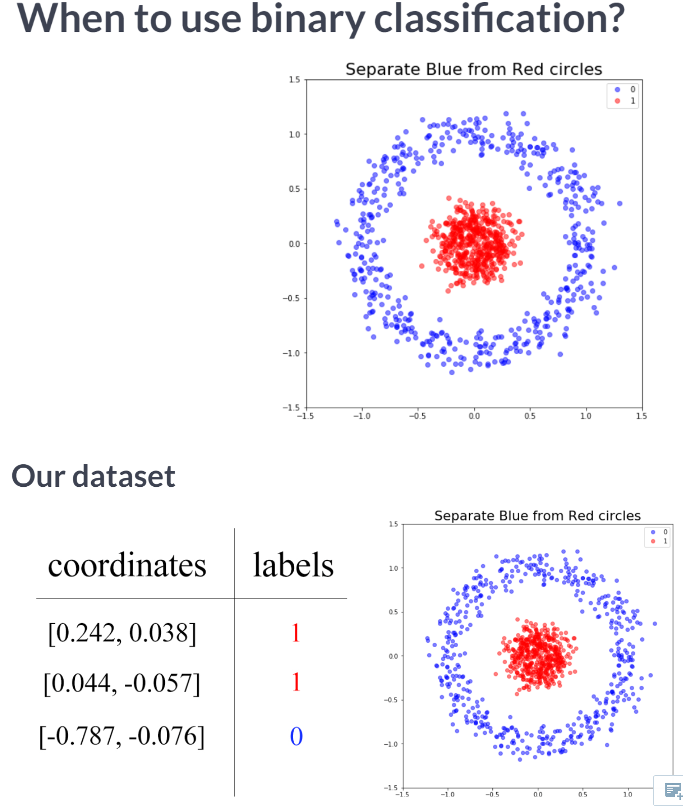
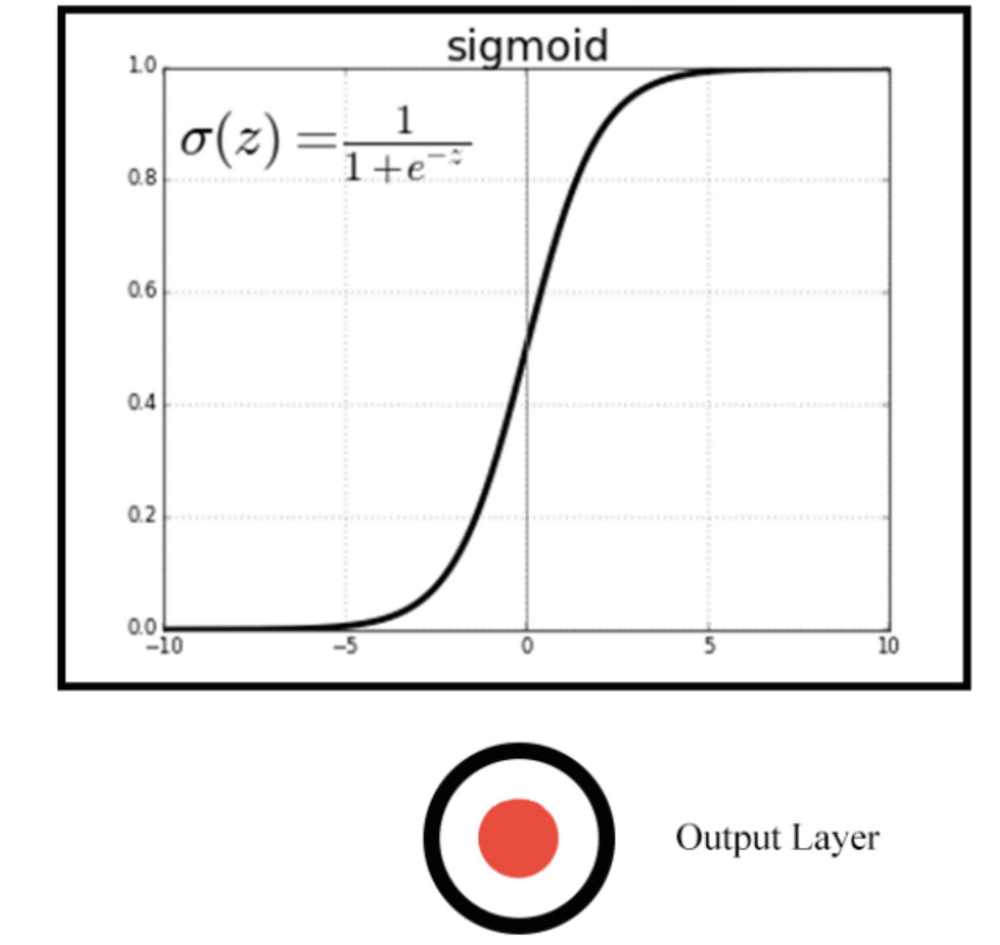
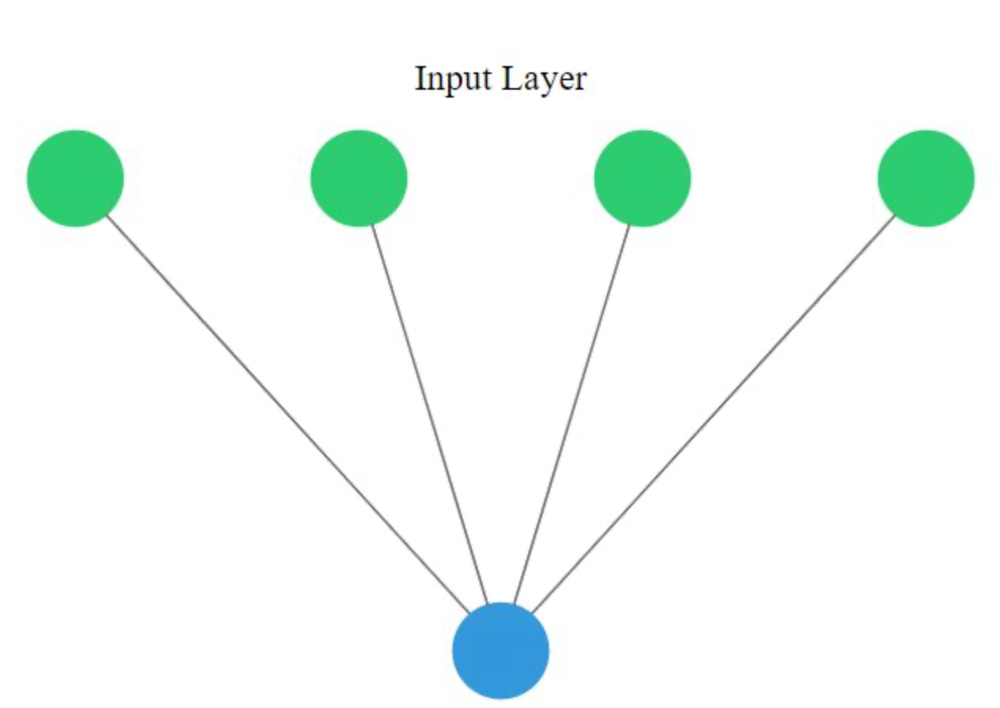
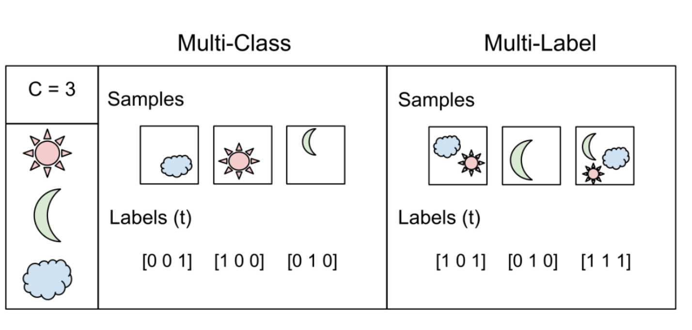
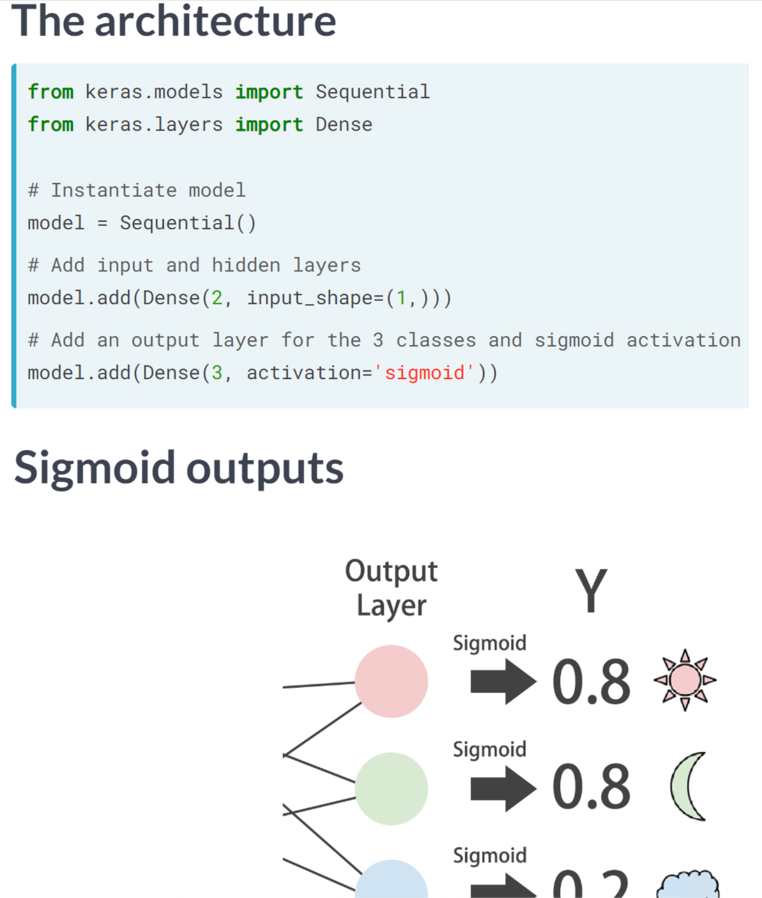
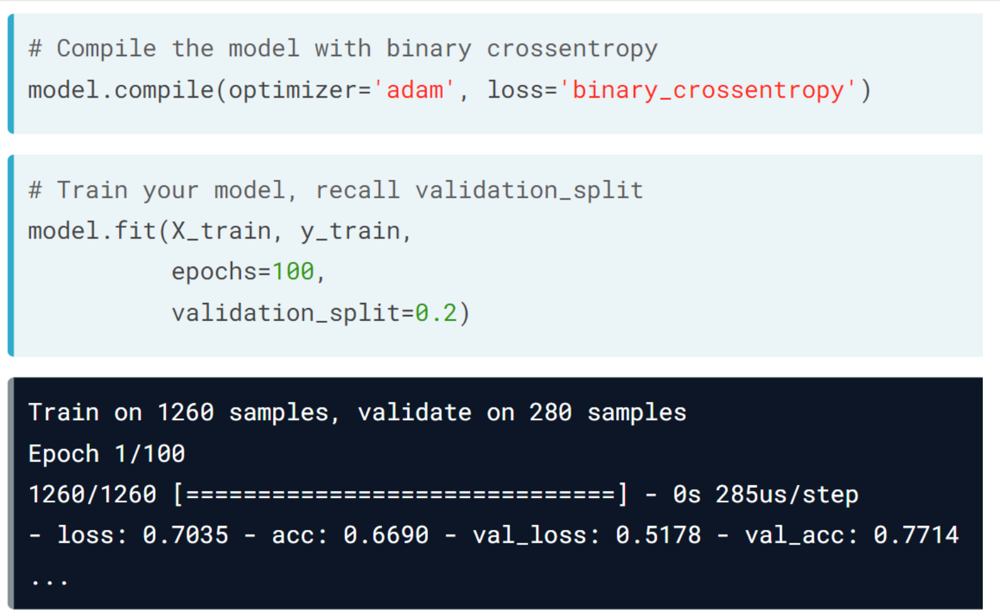
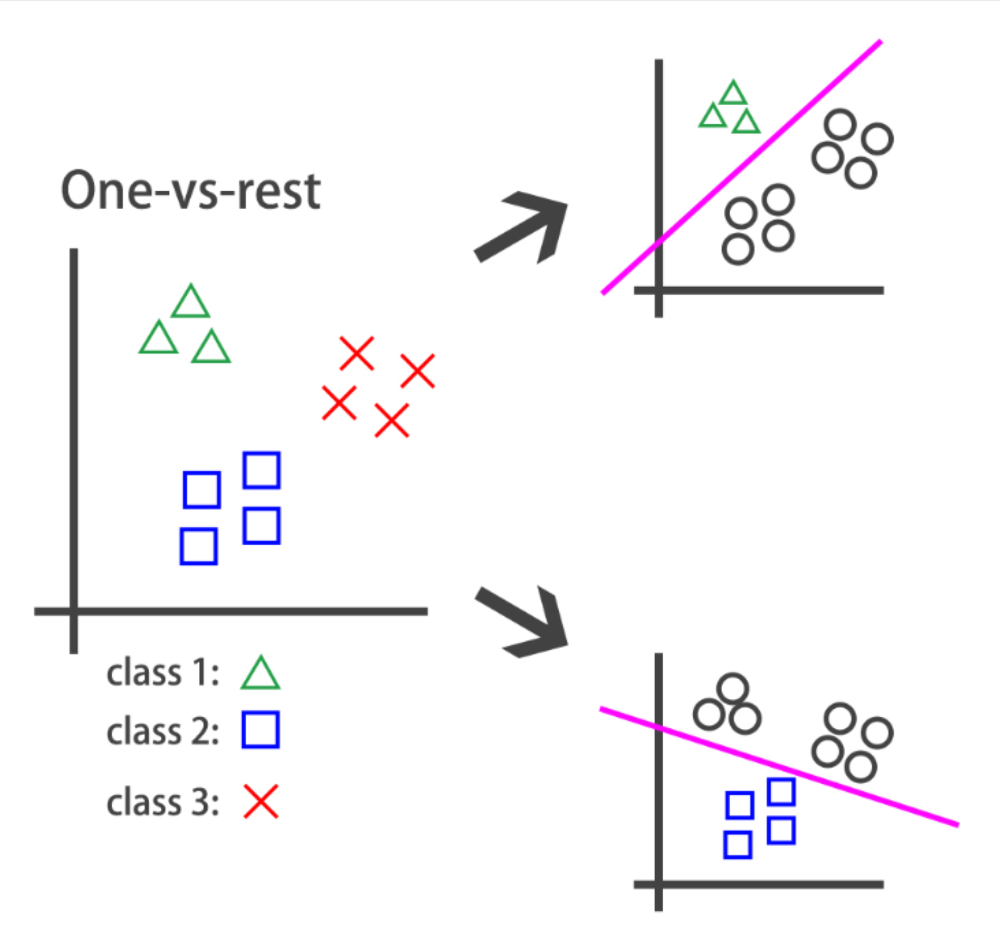
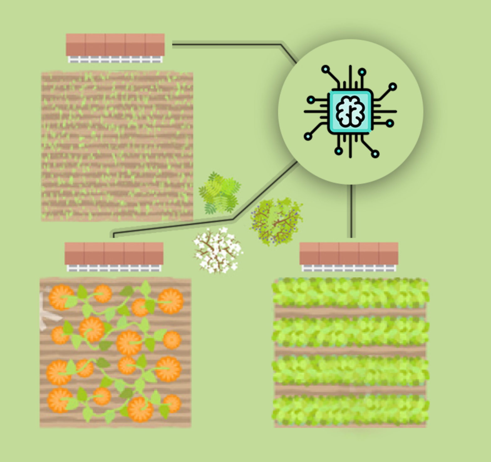

Code
import tensorflow as tf
import numpy as np
import pandas as pd
import matplotlib.pyplot as plt
import seaborn as sns
plt.rcParams['figure.figsize'] = (8, 8)kakamana
April 5, 2023
Upon completion of this chapter, you will be able to solve binary, multi-class, and multi-label problems using neural networks. All of this can be accomplished by solving problems such as detecting fake dollar bills, determining who threw which dart at a board, and building an intelligent system to water your farm. Aside from plotting model training metrics, you will also be able to stop training and save your models when they no longer improve.
This Going Deeper is part of [Datacamp course: Introduction to Deep Learning with Keras] There is no denying that deep learning is here to stay! A powerful innovation tool, it is used to solve complex problems arising from unstructured data. It is among the frameworks that make it easier to develop deep learning models, and it is versatile enough to build industry-ready models quickly. In this course, you will learn regression and save the earth by predicting asteroid trajectory, apply binary classification to distinguish real and fake dollar bills, learn to apply multiclass classification to decide who threw which dart at a dart board, and use neural networks to reconstruct noisy images. Additionally, you will learn how to tune your models to enhance their performance during training.
This is my learning experience of data science through DataCamp. These repository contributions are part of my learning journey through my graduate program masters of applied data sciences (MADS) at University Of Michigan, DeepLearning.AI, Coursera & DataCamp. You can find my similar articles & more stories at my medium & LinkedIn profile. I am available at kaggle & github blogs & github repos. Thank you for your motivation, support & valuable feedback.
These include projects, coursework & notebook which I learned through my data science journey. They are created for reproducible & future reference purpose only. All source code, slides or screenshot are intellactual property of respective content authors. If you find these contents beneficial, kindly consider learning subscription from DeepLearning.AI Subscription, Coursera, DataCamp
 
Exploring dollar bills You will practice building classification models in Keras with the Banknote Authentication dataset.
Your goal is to distinguish between real and fake dollar bills. In order to do this, the dataset comes with 4 features: variance,skewness,curtosis and entropy. These features are calculated by applying mathematical operations over the dollar bill images. The labels are found in the dataframe’s class column.
| variace | skewness | curtosis | entropy | class | |
|---|---|---|---|---|---|
| 0 | 3.62160 | 8.6661 | -2.8073 | -0.44699 | 0 |
| 1 | 4.54590 | 8.1674 | -2.4586 | -1.46210 | 0 |
| 2 | 3.86600 | -2.6383 | 1.9242 | 0.10645 | 0 |
| 3 | 3.45660 | 9.5228 | -4.0112 | -3.59440 | 0 |
| 4 | 0.32924 | -4.4552 | 4.5718 | -0.98880 | 0 |
Dataset stats:
variace skewness curtosis entropy class
count 1372.000000 1372.000000 1372.000000 1372.000000 1372.000000
mean 0.433735 1.922353 1.397627 -1.191657 0.444606
std 2.842763 5.869047 4.310030 2.101013 0.497103
min -7.042100 -13.773100 -5.286100 -8.548200 0.000000
25% -1.773000 -1.708200 -1.574975 -2.413450 0.000000
50% 0.496180 2.319650 0.616630 -0.586650 0.000000
75% 2.821475 6.814625 3.179250 0.394810 1.000000
max 6.824800 12.951600 17.927400 2.449500 1.000000
Observations per class:
0 762
1 610
Name: class, dtype: int64
pairplot shows that there are features for which the classes spread out noticeably. This gives us an intuition about our classes being easily separable.Now that you know what the Banknote Authentication dataset looks like, we’ll build a simple model to distinguish between real and fake bills.
You will perform binary classification by using a single neuron as an output. The input layer will have 4 neurons since we have 4 features in our dataset. The model’s output will be a value constrained between 0 and 1.
We will interpret this output number as the probability of our input variables coming from a fake dollar bill, with 1 meaning we are certain it’s a fake bill.

# Import the sequential model and dense layer
from tensorflow.keras.models import Sequential
from tensorflow.keras.layers import Dense
# Create a sequential model
model = Sequential()
# Add a dense layer
model.add(Dense(1, input_shape=(4,), activation='sigmoid'))
# Compile your model
model.compile(loss='binary_crossentropy', optimizer='sgd', metrics=['accuracy'])
# Display a summary of your model
model.summary()Model: "sequential_3"
_________________________________________________________________
Layer (type) Output Shape Param #
=================================================================
dense_7 (Dense) (None, 1) 5
=================================================================
Total params: 5
Trainable params: 5
Non-trainable params: 0
_________________________________________________________________You are now ready to train your model and check how well it performs when classifying new bills!
Epoch 1/20
33/33 [==============================] - 0s 6ms/step - loss: 1.1475 - accuracy: 0.4742
Epoch 2/20
33/33 [==============================] - 0s 4ms/step - loss: 0.9825 - accuracy: 0.4976
Epoch 3/20
33/33 [==============================] - 0s 4ms/step - loss: 0.8440 - accuracy: 0.5326
Epoch 4/20
33/33 [==============================] - 0s 4ms/step - loss: 0.7281 - accuracy: 0.5889
Epoch 5/20
33/33 [==============================] - 0s 4ms/step - loss: 0.6362 - accuracy: 0.6589
Epoch 6/20
33/33 [==============================] - 0s 4ms/step - loss: 0.5654 - accuracy: 0.7153
Epoch 7/20
33/33 [==============================] - 0s 4ms/step - loss: 0.5118 - accuracy: 0.7862
Epoch 8/20
33/33 [==============================] - 0s 4ms/step - loss: 0.4720 - accuracy: 0.8639
Epoch 9/20
33/33 [==============================] - 0s 4ms/step - loss: 0.4403 - accuracy: 0.9086
Epoch 10/20
33/33 [==============================] - 0s 4ms/step - loss: 0.4161 - accuracy: 0.9242
Epoch 11/20
33/33 [==============================] - 0s 4ms/step - loss: 0.3971 - accuracy: 0.9184
Epoch 12/20
33/33 [==============================] - 0s 4ms/step - loss: 0.3812 - accuracy: 0.9213
Epoch 13/20
33/33 [==============================] - 0s 4ms/step - loss: 0.3678 - accuracy: 0.9232
Epoch 14/20
33/33 [==============================] - 0s 4ms/step - loss: 0.3564 - accuracy: 0.9252
Epoch 15/20
33/33 [==============================] - 0s 4ms/step - loss: 0.3463 - accuracy: 0.9174
Epoch 16/20
33/33 [==============================] - 0s 4ms/step - loss: 0.3374 - accuracy: 0.9145
Epoch 17/20
33/33 [==============================] - 0s 4ms/step - loss: 0.3293 - accuracy: 0.9184
Epoch 18/20
33/33 [==============================] - 0s 4ms/step - loss: 0.3222 - accuracy: 0.9203
Epoch 19/20
33/33 [==============================] - 0s 4ms/step - loss: 0.3155 - accuracy: 0.9213
Epoch 20/20
33/33 [==============================] - 0s 4ms/step - loss: 0.3094 - accuracy: 0.9232
11/11 [==============================] - 0s 6ms/step - loss: 0.3004 - accuracy: 0.9417
Accuracy: 0.941690981388092A multi-class model
You’re going to build a model that predicts who threw which dart only based on where that dart landed! (That is the dart’s x and y coordinates on the board.)
This problem is a multi-class classification problem since each dart can only be thrown by one of 4 competitors. So classes/labels are mutually exclusive, and therefore we can build a neuron with as many output as competitors and use the softmax activation function to achieve a total sum of probabilities of 1 over all competitors.
| xCoord | yCoord | competitor | |
|---|---|---|---|
| 0 | 0.196451 | -0.520341 | Steve |
| 1 | 0.476027 | -0.306763 | Susan |
| 2 | 0.003175 | -0.980736 | Michael |
| 3 | 0.294078 | 0.267566 | Kate |
| 4 | -0.051120 | 0.598946 | Steve |
# Instantiate a sequential model
model = Sequential()
# Add 3 dense layers of 128, 64 and 32 neurons each
model.add(Dense(128, input_shape=(2,), activation='relu'))
model.add(Dense(64, activation='relu'))
model.add(Dense(32, activation='relu'))
# Add a dense layer with as many neurons as competitors
model.add(Dense(4, activation='softmax'))
# Compile your model using categorical_crossentropy loss
model.compile(loss='categorical_crossentropy',
optimizer='adam',
metrics=['accuracy'])In the console you can check that your labels, darts.competitor are not yet in a format to be understood by your network. They contain the names of the competitors as strings. You will first turn these competitors into unique numbers,then use the to_categorical() function from tf.keras.utils to turn these numbers into their one-hot encoded representation.
This is useful for multi-class classification problems, since there are as many output neurons as classes and for every observation in our dataset we just want one of the neurons to be activated.
from tensorflow.keras.utils import to_categorical
# Transform into a categorical variable
darts.competitor = pd.Categorical(darts.competitor)
# Assign a number to each category (label encoding)
darts.competitor = darts.competitor.cat.codes
# Print the label encoded competitors
print('Label encoded competitors: \n', darts.competitor.head())
coordinates = darts.drop(['competitor'], axis=1)
# Use to_categorical on your labels
competitors = to_categorical(darts.competitor)
# Now print the one-hot encoded labels
print('One-hot encoded competitors: \n', competitors)Label encoded competitors:
0 2
1 3
2 1
3 0
4 2
Name: competitor, dtype: int8
One-hot encoded competitors:
[[0. 0. 1. 0.]
[0. 0. 0. 1.]
[0. 1. 0. 0.]
...
[0. 1. 0. 0.]
[0. 1. 0. 0.]
[0. 0. 0. 1.]]Your model is now ready, just as your dataset. It’s time to train!
The coordinates features and competitors labels you just transformed have been partitioned into coord_train,coord_test and competitors_train,competitors_test.
Let’s find out who threw which dart just by looking at the board!
| xCoord | yCoord | |
|---|---|---|
| 0 | 0.196451 | -0.520341 |
| 1 | 0.476027 | -0.306763 |
| 2 | 0.003175 | -0.980736 |
| 3 | 0.294078 | 0.267566 |
| 4 | -0.051120 | 0.598946 |
Model: "sequential_4"
_________________________________________________________________
Layer (type) Output Shape Param #
=================================================================
dense_8 (Dense) (None, 128) 384
dense_9 (Dense) (None, 64) 8256
dense_10 (Dense) (None, 32) 2080
dense_11 (Dense) (None, 4) 132
=================================================================
Total params: 10,852
Trainable params: 10,852
Non-trainable params: 0
_________________________________________________________________Epoch 1/200
19/19 [==============================] - 0s 10ms/step - loss: 1.3599 - accuracy: 0.2450
Epoch 2/200
19/19 [==============================] - 0s 8ms/step - loss: 1.3132 - accuracy: 0.3050
Epoch 3/200
19/19 [==============================] - 0s 9ms/step - loss: 1.2641 - accuracy: 0.3683
Epoch 4/200
19/19 [==============================] - 0s 9ms/step - loss: 1.2036 - accuracy: 0.4750
Epoch 5/200
19/19 [==============================] - 0s 10ms/step - loss: 1.1331 - accuracy: 0.5267
Epoch 6/200
19/19 [==============================] - 0s 9ms/step - loss: 1.0514 - accuracy: 0.5550
Epoch 7/200
19/19 [==============================] - 0s 9ms/step - loss: 0.9658 - accuracy: 0.5950
Epoch 8/200
19/19 [==============================] - 0s 9ms/step - loss: 0.9022 - accuracy: 0.6000
Epoch 9/200
19/19 [==============================] - 0s 10ms/step - loss: 0.8625 - accuracy: 0.6517
Epoch 10/200
19/19 [==============================] - 0s 9ms/step - loss: 0.8310 - accuracy: 0.6750
Epoch 11/200
19/19 [==============================] - 0s 9ms/step - loss: 0.8100 - accuracy: 0.6750
Epoch 12/200
19/19 [==============================] - 0s 8ms/step - loss: 0.7954 - accuracy: 0.7000
Epoch 13/200
19/19 [==============================] - 0s 8ms/step - loss: 0.7777 - accuracy: 0.6917
Epoch 14/200
19/19 [==============================] - 0s 8ms/step - loss: 0.7549 - accuracy: 0.7450
Epoch 15/200
19/19 [==============================] - 0s 8ms/step - loss: 0.7466 - accuracy: 0.7350
Epoch 16/200
19/19 [==============================] - 0s 8ms/step - loss: 0.7310 - accuracy: 0.7433
Epoch 17/200
19/19 [==============================] - 0s 8ms/step - loss: 0.7277 - accuracy: 0.7367
Epoch 18/200
19/19 [==============================] - 0s 8ms/step - loss: 0.7172 - accuracy: 0.7483
Epoch 19/200
19/19 [==============================] - 0s 8ms/step - loss: 0.7029 - accuracy: 0.7783
Epoch 20/200
19/19 [==============================] - 0s 8ms/step - loss: 0.6987 - accuracy: 0.7500
Epoch 21/200
19/19 [==============================] - 0s 8ms/step - loss: 0.7010 - accuracy: 0.7733
Epoch 22/200
19/19 [==============================] - 0s 9ms/step - loss: 0.6839 - accuracy: 0.7633
Epoch 23/200
19/19 [==============================] - 0s 8ms/step - loss: 0.6838 - accuracy: 0.7700
Epoch 24/200
19/19 [==============================] - 0s 8ms/step - loss: 0.6779 - accuracy: 0.7750
Epoch 25/200
19/19 [==============================] - 0s 8ms/step - loss: 0.6696 - accuracy: 0.7833
Epoch 26/200
19/19 [==============================] - 0s 8ms/step - loss: 0.6796 - accuracy: 0.7550
Epoch 27/200
19/19 [==============================] - 0s 8ms/step - loss: 0.6662 - accuracy: 0.7883
Epoch 28/200
19/19 [==============================] - 0s 8ms/step - loss: 0.6521 - accuracy: 0.7900
Epoch 29/200
19/19 [==============================] - 0s 8ms/step - loss: 0.6569 - accuracy: 0.7850
Epoch 30/200
19/19 [==============================] - 0s 8ms/step - loss: 0.6521 - accuracy: 0.7917
Epoch 31/200
19/19 [==============================] - 0s 8ms/step - loss: 0.6500 - accuracy: 0.7900
Epoch 32/200
19/19 [==============================] - 0s 8ms/step - loss: 0.6364 - accuracy: 0.7917
Epoch 33/200
19/19 [==============================] - 0s 8ms/step - loss: 0.6423 - accuracy: 0.7800
Epoch 34/200
19/19 [==============================] - 0s 8ms/step - loss: 0.6388 - accuracy: 0.7900
Epoch 35/200
19/19 [==============================] - 0s 8ms/step - loss: 0.6392 - accuracy: 0.7917
Epoch 36/200
19/19 [==============================] - 0s 8ms/step - loss: 0.6336 - accuracy: 0.7850
Epoch 37/200
19/19 [==============================] - 0s 8ms/step - loss: 0.6258 - accuracy: 0.8133
Epoch 38/200
19/19 [==============================] - 0s 7ms/step - loss: 0.6271 - accuracy: 0.7900
Epoch 39/200
19/19 [==============================] - 0s 8ms/step - loss: 0.6266 - accuracy: 0.7933
Epoch 40/200
19/19 [==============================] - 0s 8ms/step - loss: 0.6244 - accuracy: 0.7800
Epoch 41/200
19/19 [==============================] - 0s 8ms/step - loss: 0.6145 - accuracy: 0.8050
Epoch 42/200
19/19 [==============================] - 0s 8ms/step - loss: 0.6048 - accuracy: 0.8083
Epoch 43/200
19/19 [==============================] - 0s 8ms/step - loss: 0.6091 - accuracy: 0.7983
Epoch 44/200
19/19 [==============================] - 0s 8ms/step - loss: 0.6095 - accuracy: 0.7817
Epoch 45/200
19/19 [==============================] - 0s 8ms/step - loss: 0.6036 - accuracy: 0.7983
Epoch 46/200
19/19 [==============================] - 0s 8ms/step - loss: 0.6029 - accuracy: 0.8017
Epoch 47/200
19/19 [==============================] - 0s 8ms/step - loss: 0.6009 - accuracy: 0.8033
Epoch 48/200
19/19 [==============================] - 0s 8ms/step - loss: 0.5969 - accuracy: 0.8067
Epoch 49/200
19/19 [==============================] - 0s 8ms/step - loss: 0.5980 - accuracy: 0.7967
Epoch 50/200
19/19 [==============================] - 0s 8ms/step - loss: 0.5893 - accuracy: 0.8000
Epoch 51/200
19/19 [==============================] - 0s 8ms/step - loss: 0.5829 - accuracy: 0.8083
Epoch 52/200
19/19 [==============================] - 0s 8ms/step - loss: 0.5883 - accuracy: 0.8100
Epoch 53/200
19/19 [==============================] - 0s 8ms/step - loss: 0.5877 - accuracy: 0.8017
Epoch 54/200
19/19 [==============================] - 0s 8ms/step - loss: 0.5804 - accuracy: 0.8083
Epoch 55/200
19/19 [==============================] - 0s 8ms/step - loss: 0.5662 - accuracy: 0.8233
Epoch 56/200
19/19 [==============================] - 0s 8ms/step - loss: 0.5884 - accuracy: 0.7950
Epoch 57/200
19/19 [==============================] - 0s 8ms/step - loss: 0.5694 - accuracy: 0.8133
Epoch 58/200
19/19 [==============================] - 0s 8ms/step - loss: 0.5856 - accuracy: 0.7950
Epoch 59/200
19/19 [==============================] - 0s 8ms/step - loss: 0.5747 - accuracy: 0.8183
Epoch 60/200
19/19 [==============================] - 0s 8ms/step - loss: 0.5725 - accuracy: 0.8117
Epoch 61/200
19/19 [==============================] - 0s 8ms/step - loss: 0.5763 - accuracy: 0.8017
Epoch 62/200
19/19 [==============================] - 0s 8ms/step - loss: 0.5909 - accuracy: 0.7983
Epoch 63/200
19/19 [==============================] - 0s 8ms/step - loss: 0.5654 - accuracy: 0.8050
Epoch 64/200
19/19 [==============================] - 0s 8ms/step - loss: 0.5703 - accuracy: 0.8067
Epoch 65/200
19/19 [==============================] - 0s 8ms/step - loss: 0.5569 - accuracy: 0.8233
Epoch 66/200
19/19 [==============================] - 0s 8ms/step - loss: 0.5604 - accuracy: 0.8017
Epoch 67/200
19/19 [==============================] - 0s 8ms/step - loss: 0.5515 - accuracy: 0.8133
Epoch 68/200
19/19 [==============================] - 0s 8ms/step - loss: 0.5470 - accuracy: 0.8267
Epoch 69/200
19/19 [==============================] - 0s 8ms/step - loss: 0.5462 - accuracy: 0.8133
Epoch 70/200
19/19 [==============================] - 0s 8ms/step - loss: 0.5521 - accuracy: 0.8100
Epoch 71/200
19/19 [==============================] - 0s 8ms/step - loss: 0.5748 - accuracy: 0.8083
Epoch 72/200
19/19 [==============================] - 0s 8ms/step - loss: 0.5737 - accuracy: 0.8017
Epoch 73/200
19/19 [==============================] - 0s 8ms/step - loss: 0.5477 - accuracy: 0.8117
Epoch 74/200
19/19 [==============================] - 0s 8ms/step - loss: 0.5417 - accuracy: 0.8233
Epoch 75/200
19/19 [==============================] - 0s 8ms/step - loss: 0.5536 - accuracy: 0.8067
Epoch 76/200
19/19 [==============================] - 0s 8ms/step - loss: 0.5645 - accuracy: 0.7917
Epoch 77/200
19/19 [==============================] - 0s 8ms/step - loss: 0.5348 - accuracy: 0.8217
Epoch 78/200
19/19 [==============================] - 0s 8ms/step - loss: 0.5385 - accuracy: 0.8150
Epoch 79/200
19/19 [==============================] - 0s 8ms/step - loss: 0.5344 - accuracy: 0.8167
Epoch 80/200
19/19 [==============================] - 0s 8ms/step - loss: 0.5345 - accuracy: 0.8233
Epoch 81/200
19/19 [==============================] - 0s 8ms/step - loss: 0.5356 - accuracy: 0.8183
Epoch 82/200
19/19 [==============================] - 0s 8ms/step - loss: 0.5288 - accuracy: 0.8200
Epoch 83/200
19/19 [==============================] - 0s 8ms/step - loss: 0.5303 - accuracy: 0.8150
Epoch 84/200
19/19 [==============================] - 0s 8ms/step - loss: 0.5346 - accuracy: 0.8150
Epoch 85/200
19/19 [==============================] - 0s 8ms/step - loss: 0.5253 - accuracy: 0.8250
Epoch 86/200
19/19 [==============================] - 0s 8ms/step - loss: 0.5250 - accuracy: 0.8300
Epoch 87/200
19/19 [==============================] - 0s 8ms/step - loss: 0.5292 - accuracy: 0.8133
Epoch 88/200
19/19 [==============================] - 0s 8ms/step - loss: 0.5354 - accuracy: 0.8083
Epoch 89/200
19/19 [==============================] - 0s 8ms/step - loss: 0.5224 - accuracy: 0.8167
Epoch 90/200
19/19 [==============================] - 0s 8ms/step - loss: 0.5291 - accuracy: 0.8133
Epoch 91/200
19/19 [==============================] - 0s 8ms/step - loss: 0.5260 - accuracy: 0.8150
Epoch 92/200
19/19 [==============================] - 0s 8ms/step - loss: 0.5334 - accuracy: 0.8167
Epoch 93/200
19/19 [==============================] - 0s 8ms/step - loss: 0.5535 - accuracy: 0.7967
Epoch 94/200
19/19 [==============================] - 0s 8ms/step - loss: 0.5296 - accuracy: 0.8100
Epoch 95/200
19/19 [==============================] - 0s 8ms/step - loss: 0.5200 - accuracy: 0.8333
Epoch 96/200
19/19 [==============================] - 0s 8ms/step - loss: 0.5191 - accuracy: 0.8033
Epoch 97/200
19/19 [==============================] - 0s 8ms/step - loss: 0.5296 - accuracy: 0.8183
Epoch 98/200
19/19 [==============================] - 0s 8ms/step - loss: 0.5125 - accuracy: 0.8250
Epoch 99/200
19/19 [==============================] - 0s 8ms/step - loss: 0.5164 - accuracy: 0.8117
Epoch 100/200
19/19 [==============================] - 0s 8ms/step - loss: 0.5181 - accuracy: 0.8300
Epoch 101/200
19/19 [==============================] - 0s 8ms/step - loss: 0.5128 - accuracy: 0.8133
Epoch 102/200
19/19 [==============================] - 0s 8ms/step - loss: 0.5165 - accuracy: 0.8250
Epoch 103/200
19/19 [==============================] - 0s 8ms/step - loss: 0.5064 - accuracy: 0.8250
Epoch 104/200
19/19 [==============================] - 0s 8ms/step - loss: 0.5126 - accuracy: 0.8250
Epoch 105/200
19/19 [==============================] - 0s 8ms/step - loss: 0.5226 - accuracy: 0.8133
Epoch 106/200
19/19 [==============================] - 0s 8ms/step - loss: 0.5159 - accuracy: 0.8283
Epoch 107/200
19/19 [==============================] - 0s 8ms/step - loss: 0.5139 - accuracy: 0.8167
Epoch 108/200
19/19 [==============================] - 0s 8ms/step - loss: 0.5052 - accuracy: 0.8283
Epoch 109/200
19/19 [==============================] - 0s 8ms/step - loss: 0.5023 - accuracy: 0.8167
Epoch 110/200
19/19 [==============================] - 0s 8ms/step - loss: 0.5027 - accuracy: 0.8333
Epoch 111/200
19/19 [==============================] - 0s 8ms/step - loss: 0.5040 - accuracy: 0.8167
Epoch 112/200
19/19 [==============================] - 0s 8ms/step - loss: 0.5030 - accuracy: 0.8267
Epoch 113/200
19/19 [==============================] - 0s 8ms/step - loss: 0.5058 - accuracy: 0.8250
Epoch 114/200
19/19 [==============================] - 0s 8ms/step - loss: 0.4956 - accuracy: 0.8350
Epoch 115/200
19/19 [==============================] - 0s 8ms/step - loss: 0.4995 - accuracy: 0.8350
Epoch 116/200
19/19 [==============================] - 0s 8ms/step - loss: 0.5122 - accuracy: 0.8083
Epoch 117/200
19/19 [==============================] - 0s 8ms/step - loss: 0.4971 - accuracy: 0.8333
Epoch 118/200
19/19 [==============================] - 0s 8ms/step - loss: 0.4994 - accuracy: 0.8233
Epoch 119/200
19/19 [==============================] - 0s 8ms/step - loss: 0.5066 - accuracy: 0.8217
Epoch 120/200
19/19 [==============================] - 0s 8ms/step - loss: 0.5024 - accuracy: 0.8250
Epoch 121/200
19/19 [==============================] - 0s 8ms/step - loss: 0.5034 - accuracy: 0.8200
Epoch 122/200
19/19 [==============================] - 0s 8ms/step - loss: 0.5133 - accuracy: 0.8033
Epoch 123/200
19/19 [==============================] - 0s 8ms/step - loss: 0.5380 - accuracy: 0.8133
Epoch 124/200
19/19 [==============================] - 0s 8ms/step - loss: 0.5099 - accuracy: 0.8067
Epoch 125/200
19/19 [==============================] - 0s 8ms/step - loss: 0.4996 - accuracy: 0.8267
Epoch 126/200
19/19 [==============================] - 0s 8ms/step - loss: 0.4924 - accuracy: 0.8233
Epoch 127/200
19/19 [==============================] - 0s 8ms/step - loss: 0.4982 - accuracy: 0.8183
Epoch 128/200
19/19 [==============================] - 0s 8ms/step - loss: 0.4963 - accuracy: 0.8217
Epoch 129/200
19/19 [==============================] - 0s 8ms/step - loss: 0.4999 - accuracy: 0.8233
Epoch 130/200
19/19 [==============================] - 0s 8ms/step - loss: 0.4905 - accuracy: 0.8300
Epoch 131/200
19/19 [==============================] - 0s 8ms/step - loss: 0.4933 - accuracy: 0.8200
Epoch 132/200
19/19 [==============================] - 0s 8ms/step - loss: 0.4940 - accuracy: 0.8233
Epoch 133/200
19/19 [==============================] - 0s 8ms/step - loss: 0.4919 - accuracy: 0.8300
Epoch 134/200
19/19 [==============================] - 0s 8ms/step - loss: 0.4867 - accuracy: 0.8300
Epoch 135/200
19/19 [==============================] - 0s 8ms/step - loss: 0.4899 - accuracy: 0.8250
Epoch 136/200
19/19 [==============================] - 0s 8ms/step - loss: 0.4873 - accuracy: 0.8300
Epoch 137/200
19/19 [==============================] - 0s 8ms/step - loss: 0.4948 - accuracy: 0.8150
Epoch 138/200
19/19 [==============================] - 0s 8ms/step - loss: 0.4946 - accuracy: 0.8300
Epoch 139/200
19/19 [==============================] - 0s 8ms/step - loss: 0.4836 - accuracy: 0.8283
Epoch 140/200
19/19 [==============================] - 0s 8ms/step - loss: 0.4897 - accuracy: 0.8217
Epoch 141/200
19/19 [==============================] - 0s 8ms/step - loss: 0.4869 - accuracy: 0.8283
Epoch 142/200
19/19 [==============================] - 0s 8ms/step - loss: 0.4829 - accuracy: 0.8300
Epoch 143/200
19/19 [==============================] - 0s 8ms/step - loss: 0.4859 - accuracy: 0.8267
Epoch 144/200
19/19 [==============================] - 0s 9ms/step - loss: 0.5142 - accuracy: 0.8050
Epoch 145/200
19/19 [==============================] - 0s 8ms/step - loss: 0.4846 - accuracy: 0.8350
Epoch 146/200
19/19 [==============================] - 0s 8ms/step - loss: 0.4834 - accuracy: 0.8267
Epoch 147/200
19/19 [==============================] - 0s 9ms/step - loss: 0.4880 - accuracy: 0.8300
Epoch 148/200
19/19 [==============================] - 0s 8ms/step - loss: 0.4946 - accuracy: 0.8183
Epoch 149/200
19/19 [==============================] - 0s 8ms/step - loss: 0.4964 - accuracy: 0.8150
Epoch 150/200
19/19 [==============================] - 0s 8ms/step - loss: 0.4888 - accuracy: 0.8200
Epoch 151/200
19/19 [==============================] - 0s 8ms/step - loss: 0.4914 - accuracy: 0.8183
Epoch 152/200
19/19 [==============================] - 0s 8ms/step - loss: 0.4977 - accuracy: 0.8167
Epoch 153/200
19/19 [==============================] - 0s 8ms/step - loss: 0.5129 - accuracy: 0.8067
Epoch 154/200
19/19 [==============================] - 0s 8ms/step - loss: 0.4769 - accuracy: 0.8350
Epoch 155/200
19/19 [==============================] - 0s 8ms/step - loss: 0.4711 - accuracy: 0.8333
Epoch 156/200
19/19 [==============================] - 0s 8ms/step - loss: 0.4755 - accuracy: 0.8300
Epoch 157/200
19/19 [==============================] - 0s 8ms/step - loss: 0.4756 - accuracy: 0.8350
Epoch 158/200
19/19 [==============================] - 0s 8ms/step - loss: 0.4678 - accuracy: 0.8283
Epoch 159/200
19/19 [==============================] - 0s 8ms/step - loss: 0.4772 - accuracy: 0.8267
Epoch 160/200
19/19 [==============================] - 0s 8ms/step - loss: 0.4788 - accuracy: 0.8333
Epoch 161/200
19/19 [==============================] - 0s 8ms/step - loss: 0.4827 - accuracy: 0.8167
Epoch 162/200
19/19 [==============================] - 0s 8ms/step - loss: 0.4691 - accuracy: 0.8433
Epoch 163/200
19/19 [==============================] - 0s 8ms/step - loss: 0.4675 - accuracy: 0.8283
Epoch 164/200
19/19 [==============================] - 0s 8ms/step - loss: 0.4718 - accuracy: 0.8233
Epoch 165/200
19/19 [==============================] - 0s 8ms/step - loss: 0.4732 - accuracy: 0.8267
Epoch 166/200
19/19 [==============================] - 0s 8ms/step - loss: 0.4743 - accuracy: 0.8200
Epoch 167/200
19/19 [==============================] - 0s 9ms/step - loss: 0.4690 - accuracy: 0.8317
Epoch 168/200
19/19 [==============================] - 0s 8ms/step - loss: 0.4681 - accuracy: 0.8400
Epoch 169/200
19/19 [==============================] - 0s 8ms/step - loss: 0.4798 - accuracy: 0.8250
Epoch 170/200
19/19 [==============================] - 0s 8ms/step - loss: 0.4890 - accuracy: 0.8167
Epoch 171/200
19/19 [==============================] - 0s 8ms/step - loss: 0.4966 - accuracy: 0.8167
Epoch 172/200
19/19 [==============================] - 0s 8ms/step - loss: 0.4881 - accuracy: 0.8150
Epoch 173/200
19/19 [==============================] - 0s 9ms/step - loss: 0.4745 - accuracy: 0.8200
Epoch 174/200
19/19 [==============================] - 0s 8ms/step - loss: 0.4626 - accuracy: 0.8333
Epoch 175/200
19/19 [==============================] - 0s 8ms/step - loss: 0.4800 - accuracy: 0.8250
Epoch 176/200
19/19 [==============================] - 0s 8ms/step - loss: 0.4695 - accuracy: 0.8217
Epoch 177/200
19/19 [==============================] - 0s 8ms/step - loss: 0.4690 - accuracy: 0.8217
Epoch 178/200
19/19 [==============================] - 0s 8ms/step - loss: 0.4711 - accuracy: 0.8333
Epoch 179/200
19/19 [==============================] - 0s 8ms/step - loss: 0.4787 - accuracy: 0.8200
Epoch 180/200
19/19 [==============================] - 0s 8ms/step - loss: 0.4806 - accuracy: 0.8133
Epoch 181/200
19/19 [==============================] - 0s 8ms/step - loss: 0.4899 - accuracy: 0.8133
Epoch 182/200
19/19 [==============================] - 0s 8ms/step - loss: 0.4673 - accuracy: 0.8300
Epoch 183/200
19/19 [==============================] - 0s 8ms/step - loss: 0.4657 - accuracy: 0.8250
Epoch 184/200
19/19 [==============================] - 0s 8ms/step - loss: 0.4619 - accuracy: 0.8400
Epoch 185/200
19/19 [==============================] - 0s 8ms/step - loss: 0.4846 - accuracy: 0.8250
Epoch 186/200
19/19 [==============================] - 0s 8ms/step - loss: 0.4735 - accuracy: 0.8250
Epoch 187/200
19/19 [==============================] - 0s 8ms/step - loss: 0.4560 - accuracy: 0.8317
Epoch 188/200
19/19 [==============================] - 0s 8ms/step - loss: 0.4550 - accuracy: 0.8367
Epoch 189/200
19/19 [==============================] - 0s 8ms/step - loss: 0.4700 - accuracy: 0.8300
Epoch 190/200
19/19 [==============================] - 0s 8ms/step - loss: 0.4512 - accuracy: 0.8300
Epoch 191/200
19/19 [==============================] - 0s 8ms/step - loss: 0.4641 - accuracy: 0.8283
Epoch 192/200
19/19 [==============================] - 0s 8ms/step - loss: 0.4828 - accuracy: 0.8150
Epoch 193/200
19/19 [==============================] - 0s 8ms/step - loss: 0.4987 - accuracy: 0.8000
Epoch 194/200
19/19 [==============================] - 0s 8ms/step - loss: 0.4632 - accuracy: 0.8317
Epoch 195/200
19/19 [==============================] - 0s 8ms/step - loss: 0.4719 - accuracy: 0.8167
Epoch 196/200
19/19 [==============================] - 0s 8ms/step - loss: 0.4562 - accuracy: 0.8350
Epoch 197/200
19/19 [==============================] - 0s 8ms/step - loss: 0.4545 - accuracy: 0.8367
Epoch 198/200
19/19 [==============================] - 0s 8ms/step - loss: 0.4609 - accuracy: 0.8317
Epoch 199/200
19/19 [==============================] - 0s 8ms/step - loss: 0.4701 - accuracy: 0.8317
Epoch 200/200
19/19 [==============================] - 0s 8ms/step - loss: 0.4639 - accuracy: 0.8333
7/7 [==============================] - 0s 10ms/step - loss: 0.7568 - accuracy: 0.7400
Accuracy: 0.7400000095367432This model is generalizing well!, that’s why you got a high accuracy on the test set.
Since you used the softmax activation function, for every input of 2 coordinates provided to your model there’s an output vector of 4 numbers. Each of these numbers encodes the probability of a given dart being thrown by one of the 4 possible competitors.
When computing accuracy with the model’s .evaluate() method, your model takes the class with the highest probability as the prediction. np.argmax() can help you do this since it returns the index with the highest value in an array.
Use the collection of test throws stored in coords_small_test and np.argmax() to check this out!
1/1 [==============================] - 0s 35ms/step
Raw Model Predictions | True labels
[0.2622551 0.02379499 0.70972663 0.00422329] | [0. 0. 1. 0.]
[0.14338753 0.0040605 0.03195374 0.82059824] | [0. 0. 0. 1.]
[0.33725557 0.00968876 0.1857851 0.46727058] | [0. 0. 0. 1.]
[0.91596746 0.01915123 0.04591938 0.01896184] | [1. 0. 0. 0.]
[0.23492725 0.02038225 0.74062115 0.00406925] | [0. 0. 1. 0.]# Predict on coords_small_test
preds = model.predict(coords_small_test)
# Print preds vs true values
print("{:45} | {}".format('Raw Model Predictions','True labels'))
for i,pred in enumerate(preds):
print("{} | {}".format(pred,competitors_small_test[i]))
# Extract the position of highest probability from each pred vector
preds_chosen = [np.argmax(pred) for pred in preds]
# Print preds vs true values
print("{:10} | {}".format('Rounded Model Predictions','True labels'))
for i,pred in enumerate(preds_chosen):
print("{:25} | {}".format(pred,competitors_small_test[i]))1/1 [==============================] - 0s 9ms/step
Raw Model Predictions | True labels
[0.2622551 0.02379499 0.70972663 0.00422329] | [0. 0. 1. 0.]
[0.14338753 0.0040605 0.03195374 0.82059824] | [0. 0. 0. 1.]
[0.33725557 0.00968876 0.1857851 0.46727058] | [0. 0. 0. 1.]
[0.91596746 0.01915123 0.04591938 0.01896184] | [1. 0. 0. 0.]
[0.23492725 0.02038225 0.74062115 0.00406925] | [0. 0. 1. 0.]
Rounded Model Predictions | True labels
2 | [0. 0. 1. 0.]
3 | [0. 0. 0. 1.]
3 | [0. 0. 0. 1.]
0 | [1. 0. 0. 0.]
2 | [0. 0. 1. 0.]print("\nAs you've seen you can easily interpret the softmax output. This can also help you spot those observations where your network is less certain on which class to predict, since you can see the probability distribution among classes per prediction. Let's learn how to solve new problems with neural networks!")
As you've seen you can easily interpret the softmax output. This can also help you spot those observations where your network is less certain on which class to predict, since you can see the probability distribution among classes per prediction. Let's learn how to solve new problems with neural networks!   
You’re going to automate the watering of farm parcels by making an intelligent irrigation machine. Multi-label classification problems differ from multi-class problems in that each observation can be labeled with zero or more classes. So classes/labels are not mutually exclusive, you could water all, none or any combination of farm parcels based on the inputs.
To account for this behavior what we do is have an output layer with as many neurons as classes but this time, unlike in multi-class problems, each output neuron has a sigmoid activation function. This makes each neuron in the output layer able to output a number between 0 and 1 independently.

| sensor_0 | sensor_1 | sensor_2 | sensor_3 | sensor_4 | sensor_5 | sensor_6 | sensor_7 | sensor_8 | sensor_9 | ... | sensor_13 | sensor_14 | sensor_15 | sensor_16 | sensor_17 | sensor_18 | sensor_19 | parcel_0 | parcel_1 | parcel_2 | |
|---|---|---|---|---|---|---|---|---|---|---|---|---|---|---|---|---|---|---|---|---|---|
| 0 | 1.0 | 2.0 | 1.0 | 7.0 | 0.0 | 1.0 | 1.0 | 4.0 | 0.0 | 3.0 | ... | 8.0 | 1.0 | 0.0 | 2.0 | 1.0 | 9.0 | 2.0 | 0 | 1 | 0 |
| 1 | 5.0 | 1.0 | 3.0 | 5.0 | 2.0 | 2.0 | 1.0 | 2.0 | 3.0 | 1.0 | ... | 4.0 | 5.0 | 5.0 | 2.0 | 2.0 | 2.0 | 7.0 | 0 | 0 | 0 |
| 2 | 3.0 | 1.0 | 4.0 | 3.0 | 4.0 | 0.0 | 1.0 | 6.0 | 0.0 | 2.0 | ... | 3.0 | 3.0 | 1.0 | 0.0 | 3.0 | 1.0 | 0.0 | 1 | 1 | 0 |
| 3 | 2.0 | 2.0 | 4.0 | 3.0 | 5.0 | 0.0 | 3.0 | 2.0 | 2.0 | 5.0 | ... | 4.0 | 1.0 | 1.0 | 4.0 | 1.0 | 3.0 | 2.0 | 0 | 0 | 0 |
| 4 | 4.0 | 3.0 | 3.0 | 2.0 | 5.0 | 1.0 | 3.0 | 1.0 | 1.0 | 2.0 | ... | 1.0 | 3.0 | 2.0 | 2.0 | 1.0 | 1.0 | 0.0 | 1 | 1 | 0 |
5 rows × 23 columns
model = Sequential()
# Add a hidden layer of 64 neurons and a 20 neuron's input
model.add(Dense(64, input_shape=(20, ), activation='relu'))
# Add an output layer of 3 neurons with sigmoid activation
model.add(Dense(3, activation='sigmoid'))
# Compile your model with binary crossentropy loss
model.compile(optimizer='adam',
loss='binary_crossentropy',
metrics=['accuracy'])
model.summary()Model: "sequential_5"
_________________________________________________________________
Layer (type) Output Shape Param #
=================================================================
dense_12 (Dense) (None, 64) 1344
dense_13 (Dense) (None, 3) 195
=================================================================
Total params: 1,539
Trainable params: 1,539
Non-trainable params: 0
_________________________________________________________________
You've already built 3 models for 3 different problems! Hopefully you're starting to get a feel for how different problems can be modeled in the neural network realmAn output of your multi-label model could look like this: [0.76 , 0.99 , 0.66 ]. If we round up probabilities higher than 0.5, this observation will be classified as containing all 3 possible labels [1,1,1]. For this particular problem, this would mean watering all 3 parcels in your field is the right thing to do given the input sensor measurements.
You will now train and predict with the model you just built. sensors_train, parcels_train, sensors_test and parcels_test are already loaded for you to use. Let’s see how well your machine performs!
# Train for 100 epochs using a validation split of 0.2
model.fit(sensors_train, parcels_train, epochs = 100, validation_split = 0.2)
# Predict on sensors_test and round up the predictions
preds = model.predict(sensors_test)
preds_rounded = np.round(preds)
# Print rounded preds
print('Rounded Predictions: \n', preds_rounded)
# Evaluate your model's accuracy on the test data
accuracy = model.evaluate(sensors_test, parcels_test)[1]
# Print accuracy
print('Accuracy:', accuracy)Epoch 1/100
35/35 [==============================] - 0s 8ms/step - loss: 0.7939 - accuracy: 0.4116 - val_loss: 0.5517 - val_accuracy: 0.3321
Epoch 2/100
35/35 [==============================] - 0s 5ms/step - loss: 0.5005 - accuracy: 0.5161 - val_loss: 0.4336 - val_accuracy: 0.5964
Epoch 3/100
35/35 [==============================] - 0s 5ms/step - loss: 0.4166 - accuracy: 0.6018 - val_loss: 0.3756 - val_accuracy: 0.5786
Epoch 4/100
35/35 [==============================] - 0s 5ms/step - loss: 0.3694 - accuracy: 0.6241 - val_loss: 0.3399 - val_accuracy: 0.6179
Epoch 5/100
35/35 [==============================] - 0s 5ms/step - loss: 0.3383 - accuracy: 0.6438 - val_loss: 0.3200 - val_accuracy: 0.6143
Epoch 6/100
35/35 [==============================] - 0s 5ms/step - loss: 0.3186 - accuracy: 0.6438 - val_loss: 0.3061 - val_accuracy: 0.6286
Epoch 7/100
35/35 [==============================] - 0s 5ms/step - loss: 0.3060 - accuracy: 0.6295 - val_loss: 0.2950 - val_accuracy: 0.6500
Epoch 8/100
35/35 [==============================] - 0s 5ms/step - loss: 0.2952 - accuracy: 0.6554 - val_loss: 0.2871 - val_accuracy: 0.5964
Epoch 9/100
35/35 [==============================] - 0s 5ms/step - loss: 0.2869 - accuracy: 0.6348 - val_loss: 0.2856 - val_accuracy: 0.6607
Epoch 10/100
35/35 [==============================] - 0s 5ms/step - loss: 0.2801 - accuracy: 0.6500 - val_loss: 0.2765 - val_accuracy: 0.6250
Epoch 11/100
35/35 [==============================] - 0s 5ms/step - loss: 0.2731 - accuracy: 0.6402 - val_loss: 0.2762 - val_accuracy: 0.6250
Epoch 12/100
35/35 [==============================] - 0s 5ms/step - loss: 0.2671 - accuracy: 0.6411 - val_loss: 0.2680 - val_accuracy: 0.6286
Epoch 13/100
35/35 [==============================] - 0s 5ms/step - loss: 0.2616 - accuracy: 0.6411 - val_loss: 0.2630 - val_accuracy: 0.6179
Epoch 14/100
35/35 [==============================] - 0s 5ms/step - loss: 0.2568 - accuracy: 0.6339 - val_loss: 0.2600 - val_accuracy: 0.6143
Epoch 15/100
35/35 [==============================] - 0s 5ms/step - loss: 0.2527 - accuracy: 0.6393 - val_loss: 0.2573 - val_accuracy: 0.6286
Epoch 16/100
35/35 [==============================] - 0s 5ms/step - loss: 0.2488 - accuracy: 0.6455 - val_loss: 0.2548 - val_accuracy: 0.5929
Epoch 17/100
35/35 [==============================] - 0s 5ms/step - loss: 0.2443 - accuracy: 0.6375 - val_loss: 0.2529 - val_accuracy: 0.5786
Epoch 18/100
35/35 [==============================] - 0s 5ms/step - loss: 0.2411 - accuracy: 0.6339 - val_loss: 0.2526 - val_accuracy: 0.6107
Epoch 19/100
35/35 [==============================] - 0s 5ms/step - loss: 0.2382 - accuracy: 0.6313 - val_loss: 0.2488 - val_accuracy: 0.6286
Epoch 20/100
35/35 [==============================] - 0s 4ms/step - loss: 0.2334 - accuracy: 0.6304 - val_loss: 0.2454 - val_accuracy: 0.6357
Epoch 21/100
35/35 [==============================] - 0s 5ms/step - loss: 0.2279 - accuracy: 0.6384 - val_loss: 0.2438 - val_accuracy: 0.6250
Epoch 22/100
35/35 [==============================] - 0s 4ms/step - loss: 0.2252 - accuracy: 0.6384 - val_loss: 0.2407 - val_accuracy: 0.5964
Epoch 23/100
35/35 [==============================] - 0s 5ms/step - loss: 0.2222 - accuracy: 0.6384 - val_loss: 0.2404 - val_accuracy: 0.6214
Epoch 24/100
35/35 [==============================] - 0s 5ms/step - loss: 0.2201 - accuracy: 0.6259 - val_loss: 0.2386 - val_accuracy: 0.6036
Epoch 25/100
35/35 [==============================] - 0s 5ms/step - loss: 0.2185 - accuracy: 0.6304 - val_loss: 0.2384 - val_accuracy: 0.6071
Epoch 26/100
35/35 [==============================] - 0s 5ms/step - loss: 0.2163 - accuracy: 0.6295 - val_loss: 0.2359 - val_accuracy: 0.6107
Epoch 27/100
35/35 [==============================] - 0s 5ms/step - loss: 0.2160 - accuracy: 0.6366 - val_loss: 0.2326 - val_accuracy: 0.6000
Epoch 28/100
35/35 [==============================] - 0s 5ms/step - loss: 0.2123 - accuracy: 0.6286 - val_loss: 0.2334 - val_accuracy: 0.5750
Epoch 29/100
35/35 [==============================] - 0s 5ms/step - loss: 0.2081 - accuracy: 0.6330 - val_loss: 0.2325 - val_accuracy: 0.5821
Epoch 30/100
35/35 [==============================] - 0s 5ms/step - loss: 0.2078 - accuracy: 0.6250 - val_loss: 0.2312 - val_accuracy: 0.6143
Epoch 31/100
35/35 [==============================] - 0s 5ms/step - loss: 0.2052 - accuracy: 0.6143 - val_loss: 0.2329 - val_accuracy: 0.6393
Epoch 32/100
35/35 [==============================] - 0s 5ms/step - loss: 0.2035 - accuracy: 0.6223 - val_loss: 0.2321 - val_accuracy: 0.6071
Epoch 33/100
35/35 [==============================] - 0s 5ms/step - loss: 0.2002 - accuracy: 0.6268 - val_loss: 0.2328 - val_accuracy: 0.6357
Epoch 34/100
35/35 [==============================] - 0s 5ms/step - loss: 0.1991 - accuracy: 0.6268 - val_loss: 0.2296 - val_accuracy: 0.6000
Epoch 35/100
35/35 [==============================] - 0s 5ms/step - loss: 0.1974 - accuracy: 0.6214 - val_loss: 0.2323 - val_accuracy: 0.6179
Epoch 36/100
35/35 [==============================] - 0s 5ms/step - loss: 0.1951 - accuracy: 0.6196 - val_loss: 0.2288 - val_accuracy: 0.5964
Epoch 37/100
35/35 [==============================] - 0s 5ms/step - loss: 0.1933 - accuracy: 0.6268 - val_loss: 0.2307 - val_accuracy: 0.6214
Epoch 38/100
35/35 [==============================] - 0s 5ms/step - loss: 0.1920 - accuracy: 0.6143 - val_loss: 0.2287 - val_accuracy: 0.6214
Epoch 39/100
35/35 [==============================] - 0s 5ms/step - loss: 0.1912 - accuracy: 0.6196 - val_loss: 0.2324 - val_accuracy: 0.6286
Epoch 40/100
35/35 [==============================] - 0s 5ms/step - loss: 0.1909 - accuracy: 0.6152 - val_loss: 0.2301 - val_accuracy: 0.5571
Epoch 41/100
35/35 [==============================] - 0s 5ms/step - loss: 0.1896 - accuracy: 0.6214 - val_loss: 0.2343 - val_accuracy: 0.6607
Epoch 42/100
35/35 [==============================] - 0s 5ms/step - loss: 0.1872 - accuracy: 0.6054 - val_loss: 0.2338 - val_accuracy: 0.6464
Epoch 43/100
35/35 [==============================] - 0s 5ms/step - loss: 0.1861 - accuracy: 0.6232 - val_loss: 0.2273 - val_accuracy: 0.5679
Epoch 44/100
35/35 [==============================] - 0s 5ms/step - loss: 0.1858 - accuracy: 0.6152 - val_loss: 0.2385 - val_accuracy: 0.6107
Epoch 45/100
35/35 [==============================] - 0s 5ms/step - loss: 0.1822 - accuracy: 0.6143 - val_loss: 0.2301 - val_accuracy: 0.6071
Epoch 46/100
35/35 [==============================] - 0s 5ms/step - loss: 0.1825 - accuracy: 0.6241 - val_loss: 0.2289 - val_accuracy: 0.6143
Epoch 47/100
35/35 [==============================] - 0s 5ms/step - loss: 0.1810 - accuracy: 0.6304 - val_loss: 0.2301 - val_accuracy: 0.5500
Epoch 48/100
35/35 [==============================] - 0s 5ms/step - loss: 0.1788 - accuracy: 0.6107 - val_loss: 0.2303 - val_accuracy: 0.5964
Epoch 49/100
35/35 [==============================] - 0s 5ms/step - loss: 0.1775 - accuracy: 0.6080 - val_loss: 0.2335 - val_accuracy: 0.6179
Epoch 50/100
35/35 [==============================] - 0s 5ms/step - loss: 0.1780 - accuracy: 0.6107 - val_loss: 0.2308 - val_accuracy: 0.6286
Epoch 51/100
35/35 [==============================] - 0s 5ms/step - loss: 0.1765 - accuracy: 0.6196 - val_loss: 0.2308 - val_accuracy: 0.5643
Epoch 52/100
35/35 [==============================] - 0s 5ms/step - loss: 0.1741 - accuracy: 0.6152 - val_loss: 0.2296 - val_accuracy: 0.5607
Epoch 53/100
35/35 [==============================] - 0s 5ms/step - loss: 0.1730 - accuracy: 0.6062 - val_loss: 0.2311 - val_accuracy: 0.5750
Epoch 54/100
35/35 [==============================] - 0s 5ms/step - loss: 0.1725 - accuracy: 0.6339 - val_loss: 0.2313 - val_accuracy: 0.5857
Epoch 55/100
35/35 [==============================] - 0s 5ms/step - loss: 0.1702 - accuracy: 0.6107 - val_loss: 0.2333 - val_accuracy: 0.5750
Epoch 56/100
35/35 [==============================] - 0s 5ms/step - loss: 0.1699 - accuracy: 0.6179 - val_loss: 0.2297 - val_accuracy: 0.5714
Epoch 57/100
35/35 [==============================] - 0s 5ms/step - loss: 0.1684 - accuracy: 0.6152 - val_loss: 0.2334 - val_accuracy: 0.6250
Epoch 58/100
35/35 [==============================] - 0s 5ms/step - loss: 0.1673 - accuracy: 0.6232 - val_loss: 0.2295 - val_accuracy: 0.6036
Epoch 59/100
35/35 [==============================] - 0s 5ms/step - loss: 0.1667 - accuracy: 0.6259 - val_loss: 0.2307 - val_accuracy: 0.5821
Epoch 60/100
35/35 [==============================] - 0s 5ms/step - loss: 0.1651 - accuracy: 0.6098 - val_loss: 0.2308 - val_accuracy: 0.5821
Epoch 61/100
35/35 [==============================] - 0s 5ms/step - loss: 0.1642 - accuracy: 0.6241 - val_loss: 0.2318 - val_accuracy: 0.5964
Epoch 62/100
35/35 [==============================] - 0s 5ms/step - loss: 0.1631 - accuracy: 0.6089 - val_loss: 0.2305 - val_accuracy: 0.5929
Epoch 63/100
35/35 [==============================] - 0s 5ms/step - loss: 0.1645 - accuracy: 0.6161 - val_loss: 0.2305 - val_accuracy: 0.5786
Epoch 64/100
35/35 [==============================] - 0s 5ms/step - loss: 0.1597 - accuracy: 0.6179 - val_loss: 0.2335 - val_accuracy: 0.6250
Epoch 65/100
35/35 [==============================] - 0s 5ms/step - loss: 0.1606 - accuracy: 0.6089 - val_loss: 0.2334 - val_accuracy: 0.6536
Epoch 66/100
35/35 [==============================] - 0s 5ms/step - loss: 0.1594 - accuracy: 0.6170 - val_loss: 0.2373 - val_accuracy: 0.6536
Epoch 67/100
35/35 [==============================] - 0s 5ms/step - loss: 0.1583 - accuracy: 0.6161 - val_loss: 0.2352 - val_accuracy: 0.6321
Epoch 68/100
35/35 [==============================] - 0s 5ms/step - loss: 0.1562 - accuracy: 0.6205 - val_loss: 0.2387 - val_accuracy: 0.5643
Epoch 69/100
35/35 [==============================] - 0s 5ms/step - loss: 0.1557 - accuracy: 0.6071 - val_loss: 0.2358 - val_accuracy: 0.6464
Epoch 70/100
35/35 [==============================] - 0s 5ms/step - loss: 0.1556 - accuracy: 0.6161 - val_loss: 0.2318 - val_accuracy: 0.6250
Epoch 71/100
35/35 [==============================] - 0s 5ms/step - loss: 0.1552 - accuracy: 0.6098 - val_loss: 0.2355 - val_accuracy: 0.5929
Epoch 72/100
35/35 [==============================] - 0s 5ms/step - loss: 0.1544 - accuracy: 0.6268 - val_loss: 0.2358 - val_accuracy: 0.6286
Epoch 73/100
35/35 [==============================] - 0s 5ms/step - loss: 0.1520 - accuracy: 0.6062 - val_loss: 0.2346 - val_accuracy: 0.6464
Epoch 74/100
35/35 [==============================] - 0s 5ms/step - loss: 0.1513 - accuracy: 0.6241 - val_loss: 0.2350 - val_accuracy: 0.6250
Epoch 75/100
35/35 [==============================] - 0s 5ms/step - loss: 0.1509 - accuracy: 0.6000 - val_loss: 0.2364 - val_accuracy: 0.6143
Epoch 76/100
35/35 [==============================] - 0s 5ms/step - loss: 0.1495 - accuracy: 0.6259 - val_loss: 0.2356 - val_accuracy: 0.6143
Epoch 77/100
35/35 [==============================] - 0s 5ms/step - loss: 0.1497 - accuracy: 0.6018 - val_loss: 0.2345 - val_accuracy: 0.5786
Epoch 78/100
35/35 [==============================] - 0s 5ms/step - loss: 0.1474 - accuracy: 0.6098 - val_loss: 0.2368 - val_accuracy: 0.6179
Epoch 79/100
35/35 [==============================] - 0s 5ms/step - loss: 0.1477 - accuracy: 0.6062 - val_loss: 0.2413 - val_accuracy: 0.6214
Epoch 80/100
35/35 [==============================] - 0s 5ms/step - loss: 0.1459 - accuracy: 0.6018 - val_loss: 0.2380 - val_accuracy: 0.6357
Epoch 81/100
35/35 [==============================] - 0s 5ms/step - loss: 0.1445 - accuracy: 0.6143 - val_loss: 0.2399 - val_accuracy: 0.6214
Epoch 82/100
35/35 [==============================] - 0s 5ms/step - loss: 0.1449 - accuracy: 0.6098 - val_loss: 0.2361 - val_accuracy: 0.6179
Epoch 83/100
35/35 [==============================] - 0s 5ms/step - loss: 0.1436 - accuracy: 0.6071 - val_loss: 0.2368 - val_accuracy: 0.6071
Epoch 84/100
35/35 [==============================] - 0s 6ms/step - loss: 0.1420 - accuracy: 0.6187 - val_loss: 0.2387 - val_accuracy: 0.6214
Epoch 85/100
35/35 [==============================] - 0s 5ms/step - loss: 0.1412 - accuracy: 0.6062 - val_loss: 0.2451 - val_accuracy: 0.6607
Epoch 86/100
35/35 [==============================] - 0s 5ms/step - loss: 0.1406 - accuracy: 0.6009 - val_loss: 0.2404 - val_accuracy: 0.6464
Epoch 87/100
35/35 [==============================] - 0s 5ms/step - loss: 0.1410 - accuracy: 0.6125 - val_loss: 0.2404 - val_accuracy: 0.6357
Epoch 88/100
35/35 [==============================] - 0s 5ms/step - loss: 0.1370 - accuracy: 0.6152 - val_loss: 0.2447 - val_accuracy: 0.6321
Epoch 89/100
35/35 [==============================] - 0s 5ms/step - loss: 0.1382 - accuracy: 0.6036 - val_loss: 0.2412 - val_accuracy: 0.5750
Epoch 90/100
35/35 [==============================] - 0s 5ms/step - loss: 0.1393 - accuracy: 0.6036 - val_loss: 0.2391 - val_accuracy: 0.5714
Epoch 91/100
35/35 [==============================] - 0s 5ms/step - loss: 0.1394 - accuracy: 0.6268 - val_loss: 0.2399 - val_accuracy: 0.6214
Epoch 92/100
35/35 [==============================] - 0s 5ms/step - loss: 0.1342 - accuracy: 0.5946 - val_loss: 0.2423 - val_accuracy: 0.6250
Epoch 93/100
35/35 [==============================] - 0s 5ms/step - loss: 0.1343 - accuracy: 0.6036 - val_loss: 0.2414 - val_accuracy: 0.6107
Epoch 94/100
35/35 [==============================] - 0s 5ms/step - loss: 0.1350 - accuracy: 0.6098 - val_loss: 0.2430 - val_accuracy: 0.6357
Epoch 95/100
35/35 [==============================] - 0s 5ms/step - loss: 0.1317 - accuracy: 0.6062 - val_loss: 0.2439 - val_accuracy: 0.6071
Epoch 96/100
35/35 [==============================] - 0s 5ms/step - loss: 0.1323 - accuracy: 0.6259 - val_loss: 0.2464 - val_accuracy: 0.5964
Epoch 97/100
35/35 [==============================] - 0s 5ms/step - loss: 0.1319 - accuracy: 0.5911 - val_loss: 0.2457 - val_accuracy: 0.6393
Epoch 98/100
35/35 [==============================] - 0s 5ms/step - loss: 0.1317 - accuracy: 0.6089 - val_loss: 0.2481 - val_accuracy: 0.6714
Epoch 99/100
35/35 [==============================] - 0s 5ms/step - loss: 0.1307 - accuracy: 0.5955 - val_loss: 0.2474 - val_accuracy: 0.6607
Epoch 100/100
35/35 [==============================] - 0s 5ms/step - loss: 0.1298 - accuracy: 0.6116 - val_loss: 0.2520 - val_accuracy: 0.6679
19/19 [==============================] - 0s 1ms/step
Rounded Predictions:
[[1. 0. 0.]
[1. 0. 0.]
[0. 0. 0.]
...
[1. 1. 1.]
[0. 0. 0.]
[1. 1. 0.]]
19/19 [==============================] - 0s 3ms/step - loss: 0.2389 - accuracy: 0.6550
Accuracy: 0.6549999713897705
You can see how the validation_split argument is useful for evaluating how your model performs as it trains. Let's move on and improve your model training by using callbacks!History EarlyStopping ModelCheckpoint The history callback The history callback is returned by default every time you train a model with the .fit() method. To access these metrics you can access the history dictionary parameter inside the returned h_callback object with the corresponding keys.
The irrigation machine model you built in the previous lesson is loaded for you to train, along with its features and labels now loaded as X_train, y_train, X_test, y_test. This time you will store the model’s history callback and use the validation_data parameter as it trains.
Let’s see the behind the scenes of our training!
def plot_accuracy(acc,val_acc):
# Plot training & validation accuracy values
plt.figure();
plt.plot(acc);
plt.plot(val_acc);
plt.title('Model accuracy');
plt.ylabel('Accuracy');
plt.xlabel('Epoch');
plt.legend(['Train', 'Test'], loc='upper left');
def plot_loss(loss,val_loss):
plt.figure();
plt.plot(loss);
plt.plot(val_loss);
plt.title('Model loss');
plt.ylabel('Loss');
plt.xlabel('Epoch');
plt.legend(['Train', 'Test'], loc='upper right');Epoch 1/50
44/44 [==============================] - 1s 8ms/step - loss: 0.1578 - accuracy: 0.6136 - val_loss: 0.2384 - val_accuracy: 0.6133
Epoch 2/50
44/44 [==============================] - 0s 6ms/step - loss: 0.1524 - accuracy: 0.5950 - val_loss: 0.2345 - val_accuracy: 0.6483
Epoch 3/50
44/44 [==============================] - 0s 6ms/step - loss: 0.1517 - accuracy: 0.6407 - val_loss: 0.2459 - val_accuracy: 0.6133
Epoch 4/50
44/44 [==============================] - 0s 6ms/step - loss: 0.1485 - accuracy: 0.6014 - val_loss: 0.2327 - val_accuracy: 0.5850
Epoch 5/50
44/44 [==============================] - 0s 6ms/step - loss: 0.1459 - accuracy: 0.6143 - val_loss: 0.2406 - val_accuracy: 0.6083
Epoch 6/50
44/44 [==============================] - 0s 6ms/step - loss: 0.1449 - accuracy: 0.6064 - val_loss: 0.2363 - val_accuracy: 0.6533
Epoch 7/50
44/44 [==============================] - 0s 6ms/step - loss: 0.1443 - accuracy: 0.6164 - val_loss: 0.2390 - val_accuracy: 0.6417
Epoch 8/50
44/44 [==============================] - 0s 6ms/step - loss: 0.1448 - accuracy: 0.6071 - val_loss: 0.2356 - val_accuracy: 0.5900
Epoch 9/50
44/44 [==============================] - 0s 6ms/step - loss: 0.1414 - accuracy: 0.6064 - val_loss: 0.2375 - val_accuracy: 0.5900
Epoch 10/50
44/44 [==============================] - 0s 6ms/step - loss: 0.1400 - accuracy: 0.6107 - val_loss: 0.2380 - val_accuracy: 0.5700
Epoch 11/50
44/44 [==============================] - 0s 6ms/step - loss: 0.1415 - accuracy: 0.6071 - val_loss: 0.2446 - val_accuracy: 0.5850
Epoch 12/50
44/44 [==============================] - 0s 6ms/step - loss: 0.1412 - accuracy: 0.5929 - val_loss: 0.2361 - val_accuracy: 0.5817
Epoch 13/50
44/44 [==============================] - 0s 6ms/step - loss: 0.1390 - accuracy: 0.5986 - val_loss: 0.2386 - val_accuracy: 0.5517
Epoch 14/50
44/44 [==============================] - 0s 6ms/step - loss: 0.1397 - accuracy: 0.6043 - val_loss: 0.2456 - val_accuracy: 0.6417
Epoch 15/50
44/44 [==============================] - 0s 6ms/step - loss: 0.1366 - accuracy: 0.6057 - val_loss: 0.2421 - val_accuracy: 0.6217
Epoch 16/50
44/44 [==============================] - 0s 6ms/step - loss: 0.1350 - accuracy: 0.5950 - val_loss: 0.2440 - val_accuracy: 0.5983
Epoch 17/50
44/44 [==============================] - 0s 6ms/step - loss: 0.1356 - accuracy: 0.6107 - val_loss: 0.2399 - val_accuracy: 0.6167
Epoch 18/50
44/44 [==============================] - 0s 6ms/step - loss: 0.1319 - accuracy: 0.6043 - val_loss: 0.2436 - val_accuracy: 0.5967
Epoch 19/50
44/44 [==============================] - 0s 6ms/step - loss: 0.1340 - accuracy: 0.6114 - val_loss: 0.2413 - val_accuracy: 0.5950
Epoch 20/50
44/44 [==============================] - 0s 6ms/step - loss: 0.1319 - accuracy: 0.5879 - val_loss: 0.2498 - val_accuracy: 0.6217
Epoch 21/50
44/44 [==============================] - 0s 6ms/step - loss: 0.1325 - accuracy: 0.6157 - val_loss: 0.2434 - val_accuracy: 0.6183
Epoch 22/50
44/44 [==============================] - 0s 6ms/step - loss: 0.1305 - accuracy: 0.6043 - val_loss: 0.2470 - val_accuracy: 0.6367
Epoch 23/50
44/44 [==============================] - 0s 6ms/step - loss: 0.1308 - accuracy: 0.6021 - val_loss: 0.2518 - val_accuracy: 0.6150
Epoch 24/50
44/44 [==============================] - 0s 6ms/step - loss: 0.1288 - accuracy: 0.6021 - val_loss: 0.2425 - val_accuracy: 0.5433
Epoch 25/50
44/44 [==============================] - 0s 6ms/step - loss: 0.1287 - accuracy: 0.5900 - val_loss: 0.2450 - val_accuracy: 0.6300
Epoch 26/50
44/44 [==============================] - 0s 6ms/step - loss: 0.1268 - accuracy: 0.6029 - val_loss: 0.2505 - val_accuracy: 0.6350
Epoch 27/50
44/44 [==============================] - 0s 6ms/step - loss: 0.1275 - accuracy: 0.5993 - val_loss: 0.2532 - val_accuracy: 0.6583
Epoch 28/50
44/44 [==============================] - 0s 6ms/step - loss: 0.1269 - accuracy: 0.6086 - val_loss: 0.2482 - val_accuracy: 0.6067
Epoch 29/50
44/44 [==============================] - 0s 6ms/step - loss: 0.1256 - accuracy: 0.5979 - val_loss: 0.2447 - val_accuracy: 0.5650
Epoch 30/50
44/44 [==============================] - 0s 6ms/step - loss: 0.1249 - accuracy: 0.6007 - val_loss: 0.2456 - val_accuracy: 0.5817
Epoch 31/50
44/44 [==============================] - 0s 6ms/step - loss: 0.1235 - accuracy: 0.5850 - val_loss: 0.2487 - val_accuracy: 0.5817
Epoch 32/50
44/44 [==============================] - 0s 6ms/step - loss: 0.1242 - accuracy: 0.6007 - val_loss: 0.2488 - val_accuracy: 0.6000
Epoch 33/50
44/44 [==============================] - 0s 6ms/step - loss: 0.1227 - accuracy: 0.6071 - val_loss: 0.2502 - val_accuracy: 0.5350
Epoch 34/50
44/44 [==============================] - 0s 6ms/step - loss: 0.1217 - accuracy: 0.5829 - val_loss: 0.2500 - val_accuracy: 0.5900
Epoch 35/50
44/44 [==============================] - 0s 6ms/step - loss: 0.1226 - accuracy: 0.6093 - val_loss: 0.2521 - val_accuracy: 0.5917
Epoch 36/50
44/44 [==============================] - 0s 6ms/step - loss: 0.1216 - accuracy: 0.5986 - val_loss: 0.2532 - val_accuracy: 0.6267
Epoch 37/50
44/44 [==============================] - 0s 6ms/step - loss: 0.1196 - accuracy: 0.5714 - val_loss: 0.2529 - val_accuracy: 0.6517
Epoch 38/50
44/44 [==============================] - 0s 6ms/step - loss: 0.1205 - accuracy: 0.6186 - val_loss: 0.2551 - val_accuracy: 0.6200
Epoch 39/50
44/44 [==============================] - 0s 6ms/step - loss: 0.1184 - accuracy: 0.5929 - val_loss: 0.2499 - val_accuracy: 0.5883
Epoch 40/50
44/44 [==============================] - 0s 6ms/step - loss: 0.1196 - accuracy: 0.5936 - val_loss: 0.2532 - val_accuracy: 0.6167
Epoch 41/50
44/44 [==============================] - 0s 6ms/step - loss: 0.1175 - accuracy: 0.6086 - val_loss: 0.2544 - val_accuracy: 0.6133
Epoch 42/50
44/44 [==============================] - 0s 6ms/step - loss: 0.1171 - accuracy: 0.5929 - val_loss: 0.2622 - val_accuracy: 0.6250
Epoch 43/50
44/44 [==============================] - 0s 6ms/step - loss: 0.1174 - accuracy: 0.5971 - val_loss: 0.2545 - val_accuracy: 0.6000
Epoch 44/50
44/44 [==============================] - 0s 6ms/step - loss: 0.1163 - accuracy: 0.5921 - val_loss: 0.2676 - val_accuracy: 0.5567
Epoch 45/50
44/44 [==============================] - 0s 6ms/step - loss: 0.1172 - accuracy: 0.6057 - val_loss: 0.2600 - val_accuracy: 0.5950
Epoch 46/50
44/44 [==============================] - 0s 6ms/step - loss: 0.1149 - accuracy: 0.5907 - val_loss: 0.2559 - val_accuracy: 0.5817
Epoch 47/50
44/44 [==============================] - 0s 6ms/step - loss: 0.1156 - accuracy: 0.5921 - val_loss: 0.2591 - val_accuracy: 0.6350
Epoch 48/50
44/44 [==============================] - 0s 6ms/step - loss: 0.1148 - accuracy: 0.5929 - val_loss: 0.2577 - val_accuracy: 0.5933
Epoch 49/50
44/44 [==============================] - 0s 6ms/step - loss: 0.1118 - accuracy: 0.5943 - val_loss: 0.2586 - val_accuracy: 0.5517
Epoch 50/50
44/44 [==============================] - 0s 6ms/step - loss: 0.1119 - accuracy: 0.5964 - val_loss: 0.2620 - val_accuracy: 0.6150The early stopping callback is useful since it allows for you to stop the model training if it no longer improves after a given number of epochs. To make use of this functionality you need to pass the callback inside a list to the model’s callback parameter in the .fit() method.
The model you built to detect fake dollar bills is loaded for you to train, this time with early stopping. X_train, y_train, X_test and y_test are also available for you to use.
# Import the early stopping callback
from tensorflow.keras.callbacks import EarlyStopping
# Define a callback to monitor val_accuracy
monitor_val_acc = EarlyStopping(monitor='val_accuracy', patience=5)
# Train your model using the early stopping callback
model.fit(X_train, y_train, epochs=1000, validation_data=(X_test, y_test),
callbacks=[monitor_val_acc]);Epoch 1/1000
33/33 [==============================] - 1s 10ms/step - loss: 1.5896 - accuracy: 0.2624 - val_loss: 1.5037 - val_accuracy: 0.2741
Epoch 2/1000
33/33 [==============================] - 0s 5ms/step - loss: 1.3869 - accuracy: 0.2779 - val_loss: 1.3122 - val_accuracy: 0.2828
Epoch 3/1000
33/33 [==============================] - 0s 5ms/step - loss: 1.2060 - accuracy: 0.2974 - val_loss: 1.1436 - val_accuracy: 0.3120
Epoch 4/1000
33/33 [==============================] - 0s 5ms/step - loss: 1.0495 - accuracy: 0.3120 - val_loss: 0.9972 - val_accuracy: 0.3411
Epoch 5/1000
33/33 [==============================] - 0s 5ms/step - loss: 0.9165 - accuracy: 0.3537 - val_loss: 0.8734 - val_accuracy: 0.3936
Epoch 6/1000
33/33 [==============================] - 0s 5ms/step - loss: 0.8060 - accuracy: 0.4344 - val_loss: 0.7715 - val_accuracy: 0.5102
Epoch 7/1000
33/33 [==============================] - 0s 5ms/step - loss: 0.7162 - accuracy: 0.5355 - val_loss: 0.6890 - val_accuracy: 0.6093
Epoch 8/1000
33/33 [==============================] - 0s 5ms/step - loss: 0.6444 - accuracy: 0.6647 - val_loss: 0.6231 - val_accuracy: 0.7289
Epoch 9/1000
33/33 [==============================] - 0s 5ms/step - loss: 0.5873 - accuracy: 0.8154 - val_loss: 0.5720 - val_accuracy: 0.8484
Epoch 10/1000
33/33 [==============================] - 0s 5ms/step - loss: 0.5428 - accuracy: 0.8785 - val_loss: 0.5312 - val_accuracy: 0.9009
Epoch 11/1000
33/33 [==============================] - 0s 5ms/step - loss: 0.5070 - accuracy: 0.9223 - val_loss: 0.4972 - val_accuracy: 0.9242
Epoch 12/1000
33/33 [==============================] - 0s 5ms/step - loss: 0.4771 - accuracy: 0.9339 - val_loss: 0.4699 - val_accuracy: 0.9504
Epoch 13/1000
33/33 [==============================] - 0s 5ms/step - loss: 0.4528 - accuracy: 0.9368 - val_loss: 0.4468 - val_accuracy: 0.9534
Epoch 14/1000
33/33 [==============================] - 0s 5ms/step - loss: 0.4322 - accuracy: 0.9368 - val_loss: 0.4271 - val_accuracy: 0.9417
Epoch 15/1000
33/33 [==============================] - 0s 5ms/step - loss: 0.4144 - accuracy: 0.9339 - val_loss: 0.4098 - val_accuracy: 0.9417
Epoch 16/1000
33/33 [==============================] - 0s 5ms/step - loss: 0.3988 - accuracy: 0.9291 - val_loss: 0.3951 - val_accuracy: 0.9388
Epoch 17/1000
33/33 [==============================] - 0s 5ms/step - loss: 0.3854 - accuracy: 0.9291 - val_loss: 0.3822 - val_accuracy: 0.9388
Epoch 18/1000
33/33 [==============================] - 0s 5ms/step - loss: 0.3737 - accuracy: 0.9291 - val_loss: 0.3706 - val_accuracy: 0.9359Deep learning models can take a long time to train, especially when you move to deeper architectures and bigger datasets. Saving your model every time it improves as well as stopping it when it no longer does allows you to worry less about choosing the number of epochs to train for. You can also restore a saved model anytime and resume training where you left it.
Use the EarlyStopping() and the ModelCheckpoint() callbacks so that you can go eat a jar of cookies while you leave your computer to work!
from tensorflow.keras.callbacks import ModelCheckpoint
# Early stop on validation accuracy
monitor_val_acc = EarlyStopping(monitor='val_accuracy', patience=3)
# Save the best model as best_banknote_model.hdf5
modelCheckpoint = ModelCheckpoint('./best_banknote_model.hdf5', save_best_only=True)
# Fit your model for a stupid amount of epochs
h_callback = model.fit(X_train, y_train,
epochs=1000000000000,
callbacks=[monitor_val_acc, modelCheckpoint],
validation_data=(X_test, y_test))Epoch 1/1000000000000
33/33 [==============================] - 0s 6ms/step - loss: 0.3041 - accuracy: 0.9242 - val_loss: 0.3002 - val_accuracy: 0.9388
Epoch 2/1000000000000
33/33 [==============================] - 0s 5ms/step - loss: 0.2986 - accuracy: 0.9232 - val_loss: 0.2946 - val_accuracy: 0.9388
Epoch 3/1000000000000
33/33 [==============================] - 0s 5ms/step - loss: 0.2935 - accuracy: 0.9261 - val_loss: 0.2894 - val_accuracy: 0.9359
Epoch 4/1000000000000
33/33 [==============================] - 0s 5ms/step - loss: 0.2888 - accuracy: 0.9252 - val_loss: 0.2844 - val_accuracy: 0.9388